There are many different bunny cages on the market. Some are roomy with solid bottoms; others are tight with wire bottoms that can injure a rabbit's foot. Mopsy prefers a high quality multi-level condo, like the ones made by Leith Petwerks, or a lovingly crafted home-built condo, which he'll show you how to make.
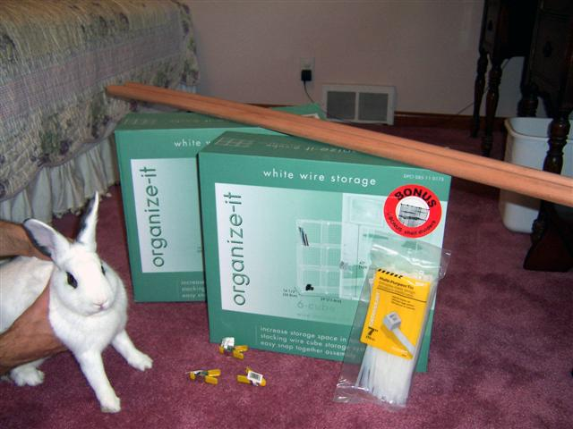
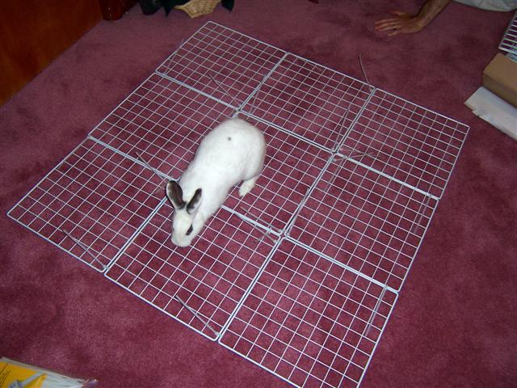
Lay out the wall on the floor, making sure that the grid portions of all of them are the same side up. Secure with cable ties. Don't pull the cable ties fully tight just yet; leave a slight give to them (see photo below). You will tighten them later. Repeat to make the second wall.
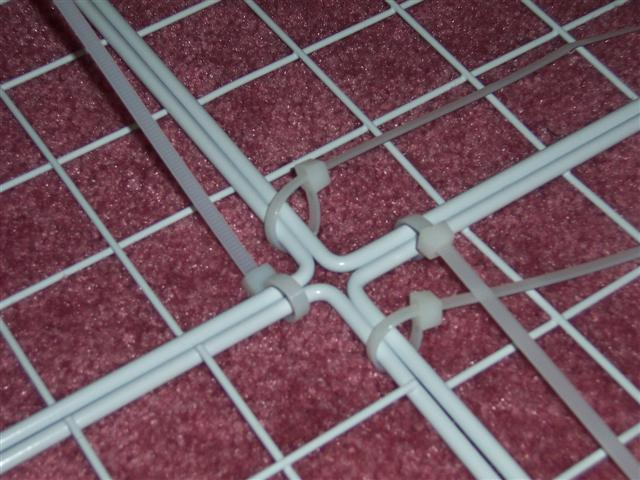
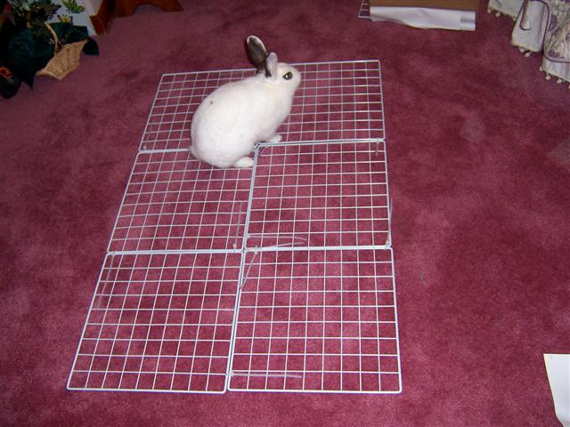
Secure the grids together with cable ties as in step #1. Repeat to make the second side wall.
After you use the cable ties to connect the four walls together at each square grid, you will find that you can manipulate the cage to be various shapes, e.g. triangle, pentagon, etc. Decide on the shape that you want at this time. Mopsy chose a rectangle.
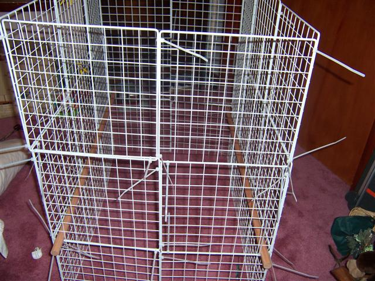
Slip two dowels through the grids along the length of the cage. The dowels will prevent the bun's shelves from falling through. Where you put them depends on the shelf layout and door location. Mopsy contemplated a larger lower level and high door, but ended up settling on the layout shown in step 9.
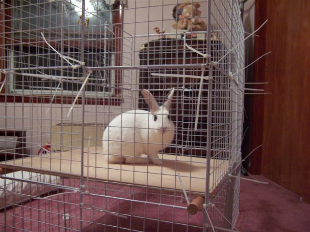
Place the plywood on top of the dowels. Bunny is optional at this stage.
Mopsy likes to hop between levels in the condo but doesn't care to go up, over a wall, and then back down all in one jump. Since your rabbit is likely similar, your condo won't need a top if you plan your floor and wall heights with surrounding furniture in mind.
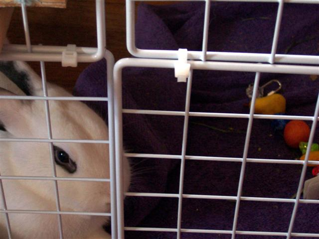
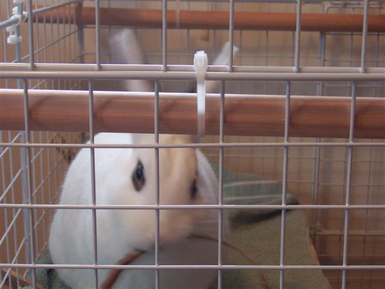
You're almost done. If you want, take a moment to relax with a snack. Mopsy recommends the handle of a wicker basket.
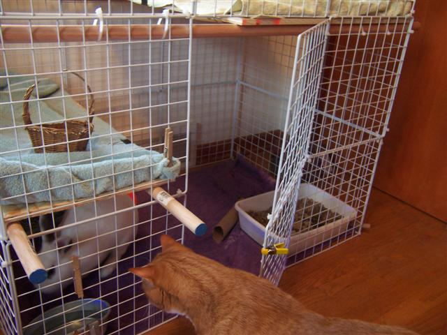
Use the small spring to clasp the door shut. It's okay. Mopsy and Julius get along.
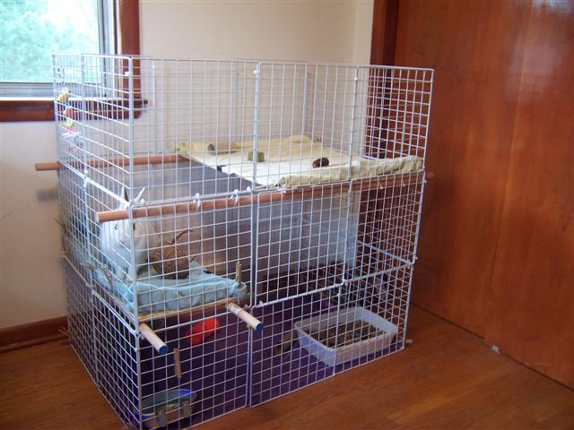
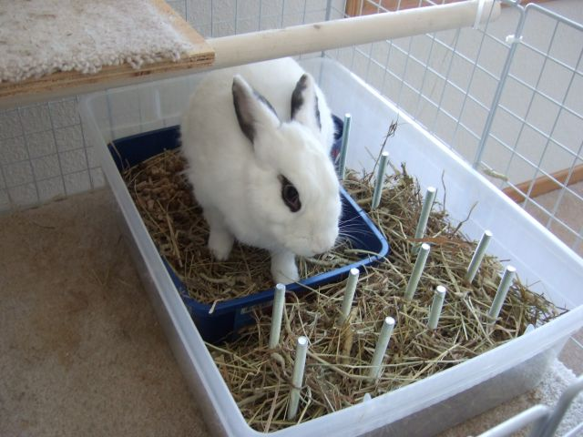
Mopsy likes a towel on each shelf, held in place with clamps to help his footing. Or carpet is a good choice, but only on levels that tend to stay clean. An easy-to-clean choice is thick contact paper (squishy, with foam inside)—less work for the room service crew but still Mopsy approved.
For an extra touch, if your rabbit's appetite is on the messy side like Mopsy's, you may want to consider a hay tray designed to keep your rabbit (and his droppings) in the rabbit zone and the hay in the hay zone. Place a small litter pan inside a high-walled plastic container. In the remaining space, place inch-thick boards with protruding bolts (about 6 inches long and ¼ inch or more in diameter, spaced every 3 to 4 inches). The bolts won't hurt a rabbit, but they aren't comfortable, either, so the hay can go on the boards while the rabbit stays in the litter pan. Mopsy appreciates how it helps him stay a tidy bun.